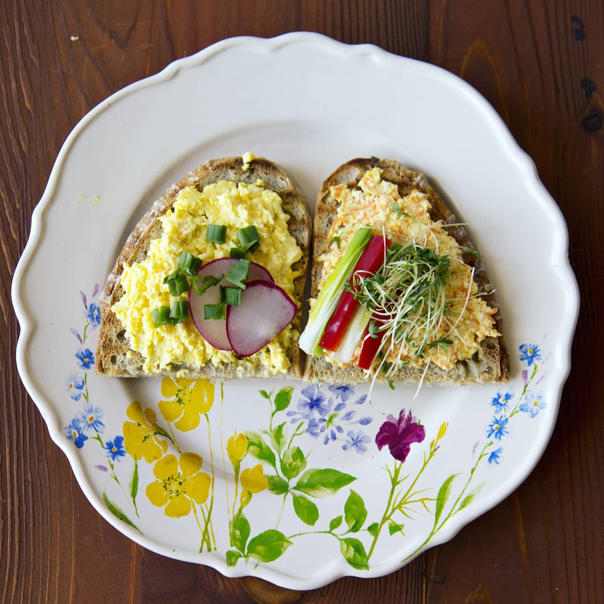

Vajíčková nátierka podľa @mozessavydavat.sk — Normy Jedál
S otepľovaním prirodzene prichádza aj chuť na "studené" raňajky. Kaše zamieňame za granolu s jogurtom alebo kefírom a hlavne kváskový chlebík "s niečím" a zeleninou. 🙂
Najradšej by som robila každý deň inú nátierku, ale naše deti sú veľmi maslové - okrem masla, prípadne Lučiny či avokáda je len veľmi málo nátierok, ktoré akceptujú.
🥚Vajíčková je topka - tri domáce vajíčka uvaríme na tvrdo, nastrúhame, pridáme lyžicu Lučiny, 30-40 g masla, pol lyžičky horčice a dochutíme soľou.
🥕Mrkvovo-tvarohová v detskej verzii spočíva len v nastrúhanej mrkve vymiešanej s tučným tvarohom a trochou kyslej smotany. Dospelácka verzia je, samozrejme, lepšia, ja osobne by som ju jedla na kilá. Tučný alebo polotučný hrudkovitý tvaroh, veľa najemno nastrúhanej mrkvy, soľ, prelisovaný cesnak (na 1 tvaroh 2-3 strúčiky) a všetko len prepojíme/ dochutíme majolkou. Majonézu používam veeľmi málo, ale sem sa mi vyslovene hodí, stačia 2 PL a chuťovo je to iný level. 🙂
Okrem týchto dvoch nátierok u nás ešte fičia cviklová s lučinou a avokádová. Tam sa zoznam zatiaľ končí. No ja sa nevzdávam. Aké nátierky majú rady vaše deti? 🤔
.
.
.
.
#dnesjem
#rano
#ranajky #breakfast #snidane #dnesranajkujem #natierka #vajickovanatierka #mrkva #tvaroh #domacastrava #homemade #chlebik #dnesjemzdravo #jar #springmood #mozessavydavat #foodblogger #recept #dilemma #onmyplate #zdravytalir